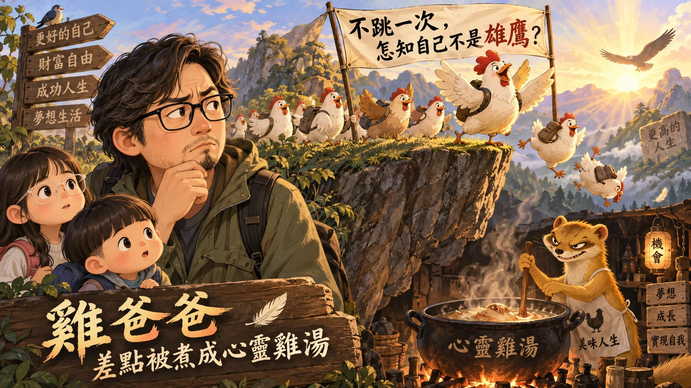
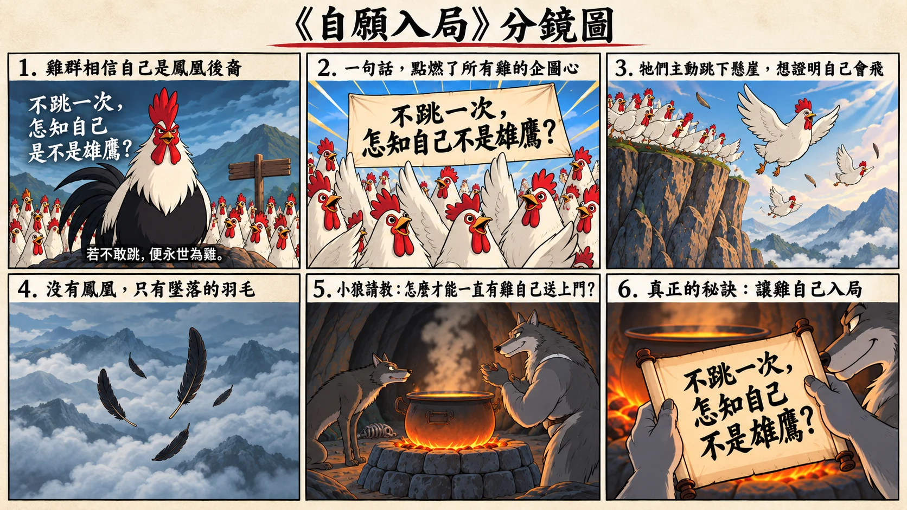

—有些騙局拿走的是錢，有些局拿走的，卻可能是一段一段的人生

最近雞爸爸開始問自己到底怕什麼？想人生也快邁向五字頭，失敗本身好像都還沒那麼可怕，畢竟走錯路、跌一跤、重新開始，很多時候都還有機會。雞爸爸反而感到害怕的是：會不會有天發現自己的人生，其實是一直被別人的利益推著走。
這個念頭，是從最近看到的一支有關雞的影片開始的。

影片裡，一群雞在懸崖邊，深信自己是鳳凰的後裔。只要勇敢往下一跳，就有機會羽化。旁邊還寫著一句很熱血的話：「不跳一次，怎知自己不是雄鷹？」
鏡頭往下一轉，懸崖底下，一隻黃鼠狼正燉煮著一鍋雞湯。雞爸爸本來覺得蠻好笑的，卻又有種笑不太出來的感覺。因為這種「讓你自己往前走」的方式，好像以前也曾經遇過...
年輕時，也曾經被那些「成功的道理」鼓舞
剛出社會時，雞爸爸也曾接觸所謂的外商金融業，那時台上的處經理是前直銷總裁出身，非常會講話，不只是會，而是真的非常會煽動人心，不是普通的口才好而已。
他懂得怎麼抓住每個渴望成功的野心：談夢想、談成功、談財富、談家庭，也談如何「不要甘於平凡」，用簡單到小學生都懂的白話，讓台下男女老少連博士都慷慨激昂。
就是那種不咬文嚼字、平凡到不行幾句話，變成非常好記又有力的道理。你坐在台下聽，常常會有一種：「對耶，不都是我知道的道理，我以前怎麼沒有這麼想過？」的感覺。
甚至聽完真的會覺得，好像只要自己的企圖心再大一點、再勇敢一點、再努力一點，人生就會不一樣。老實說，雞爸爸當年也真的被鼓舞過，甚至到今天，很多東西還是很受用。
只是時間拉長之後，才慢慢發現還一件事，人的思路就像水流，重點是怎麼導、導到哪...很多很有說服力的人都擅於鼓動人心，但中間是否有被刻意忽略的小細節，才是那個局...
真正高明的局，不需要騙你
一件事情原本應該評估很多，適不適合？成本多少？風險是什麼？失敗之後能不能回頭？但只要有人先替你定義：什麼叫成功、什麼叫有企圖心、什麼叫勇敢。
很多問題就會慢慢被轉成另一個問題：「你到底夠不夠想成功？」
如果猶豫，好像不夠有企圖心；如果懷疑，好像不夠勇敢；如果不往前，好像甘於平凡。
這時候甚至不需要有人強迫你，你會開始自己說服自己，就像影片裡的黃鼠狼。
牠沒有推任何一隻雞，牠只需要讓雞相信：跳下去，是為了成為更好的自己。
接下來的事情，雞會自己完成，真正高明的局，往往不是說一個完全虛假的故事，而是拿一些真的道理，包進一個對自己有利的目的裡...
你以為自己在追夢，其實你往前走的每一步，都正在成全別人的利益...
有些局，消耗的不是錢，而是人生
現在世界本來就有很多可怕的騙局，騙錢、賭博、遊戲，甚至把人騙到異地、失去自由。這些當然都很恐怖，但雞爸爸更害怕另一種局，就像黃鼠狼這樣引你自願入局而不自覺。
它不一定會立刻讓你失去什麼，甚至一開始，還會讓你充滿希望。告訴你：這就是成功、這就是機會、這就是你應該追求的人生。
直到你相信，開始投入時間、感情、青春。一年、五年、十年。直到某天回頭，才發現：那條路一直有人催你往前，不是因為它適合你，而是因為你繼續走下去，對他有利...
錢被騙了，也許還能再賺；工作選錯了，也可能重來；但人生最昂貴的，從來不只是錢。而是那些錯過之後，不會再回來的時間、關係與選擇。
人生最怕的，不是走錯路，而是失去了歲月，才發現那條路不是為了成全自己...
當了爸爸以後，真正怕的是孩子沒有想法
如果只是雞爸爸自己，其實還好，活到這個年紀，也踩過一些坑。現在再有人說：「這是一個千載難逢的機會。」雞爸爸至少會先停一下。
年輕時比較容易熱血，現在熱血之前，至少會先看看鍋子有沒有在燒。
但真正讓雞爸爸害怕的，是鼠姊姊和龍弟弟，他們現在還很單純。相信爸爸媽媽，相信老師，也相信很多自己看到、聽到的事情。
可是他們總有一天會長大，會自己交朋友、談戀愛、找工作，也會自己決定人生往哪裡走。而那時候，雞爸爸不可能永遠站在旁邊告訴他們：「先不要急。」「他為什麼這麼希望你答應？」「這真的是你想要的嗎？」
所以雞爸爸真正想留給鼠姊姊和龍弟弟的，也許不是一張正確的人生地圖，因為這世界根本沒有那種東西。只是希望有一天，當所有人都告訴他們應該往某個方向走時，他們還能停一下，問自己：為什麼？這真的是我要去的地方嗎？
雞爸爸不怕孩子走錯路，人生本來就會跌倒、會繞路。
希望他們在任何人替他們定義成功以前，能夠清楚知道自己想成為什麼樣的人...